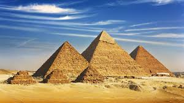
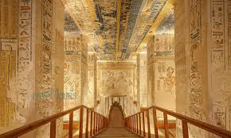
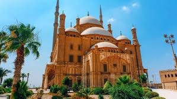

The Egyptian pyramids are monumental ancient masonry tombs built during the Old and Middle Kingdoms. The most famous, the Pyramids of Giza, consist of the Great Pyramid (Khufu), Khafre, and Menkaure. Located near Cairo, they stand as the only surviving Wonder of the Ancient World.

Located on the west bank of the Nile in Luxor, this ancient burial ground holds over 60 rock-cut tombs of New Kingdom pharaohs, including Tutankhamun and Ramesses II. Visitors can walk deep into the cliffs to marvel at vivid, thousands-of-years-old wall paintings that detail journeys to the afterlife.

Perched atop the Muqattam hills, this massive medieval Islamic fortification was built by Salah ad-Din in the 12th century to protect Cairo from Crusaders. Today, it offers panoramic views of the city skyline and houses the stunning, alabaster-clad Mosque of Muhammad Ali.
